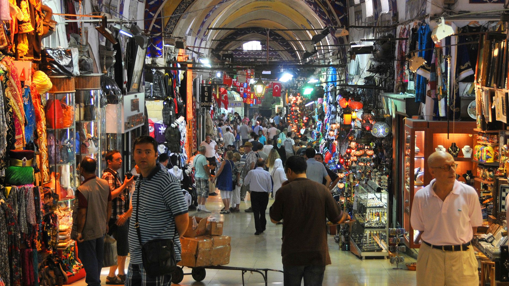
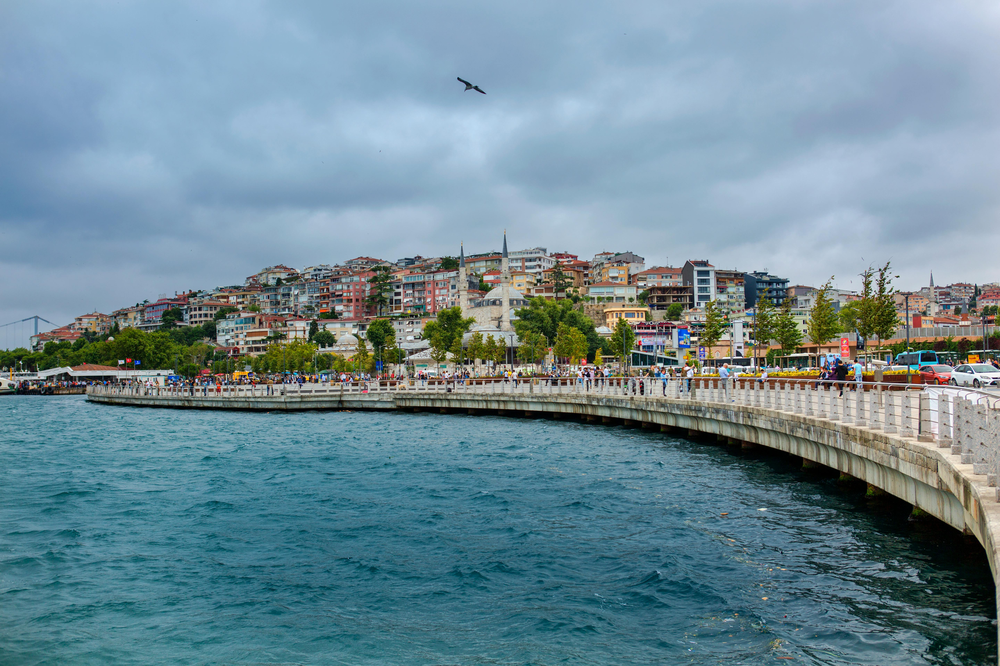
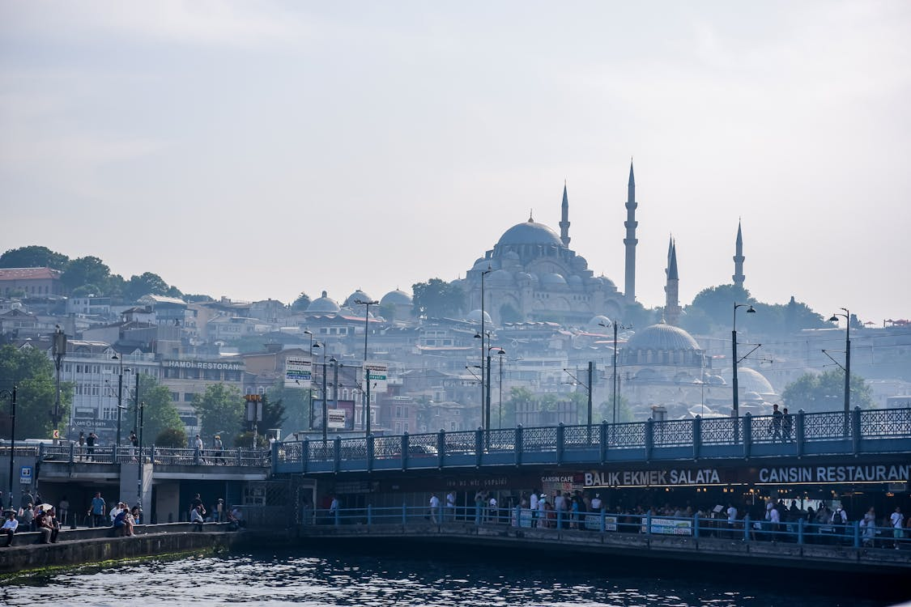
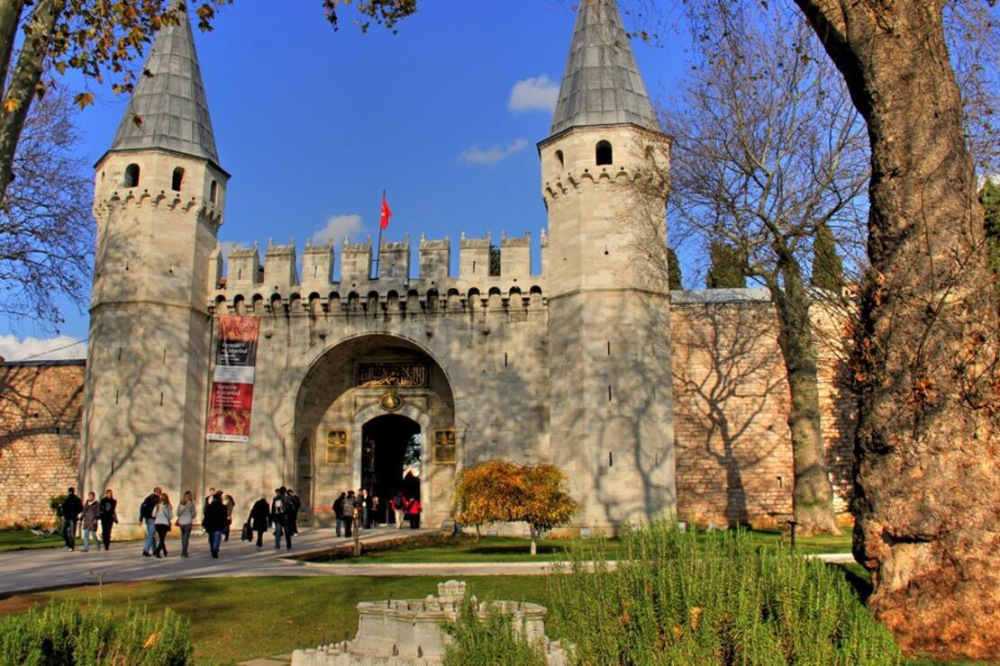
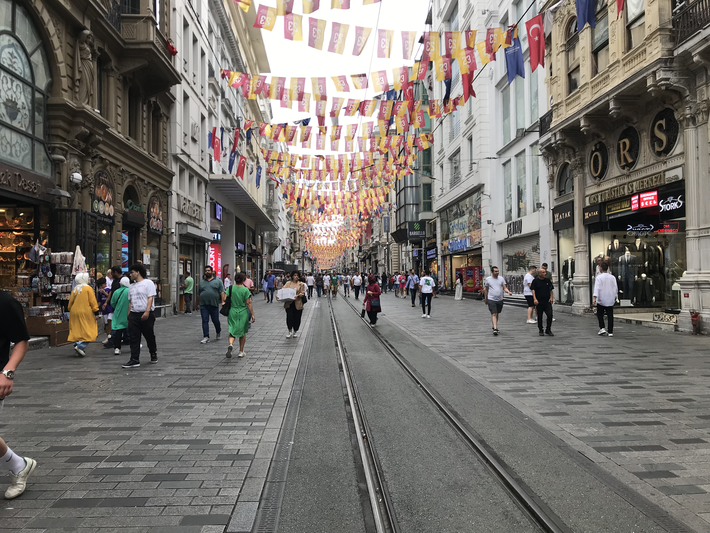
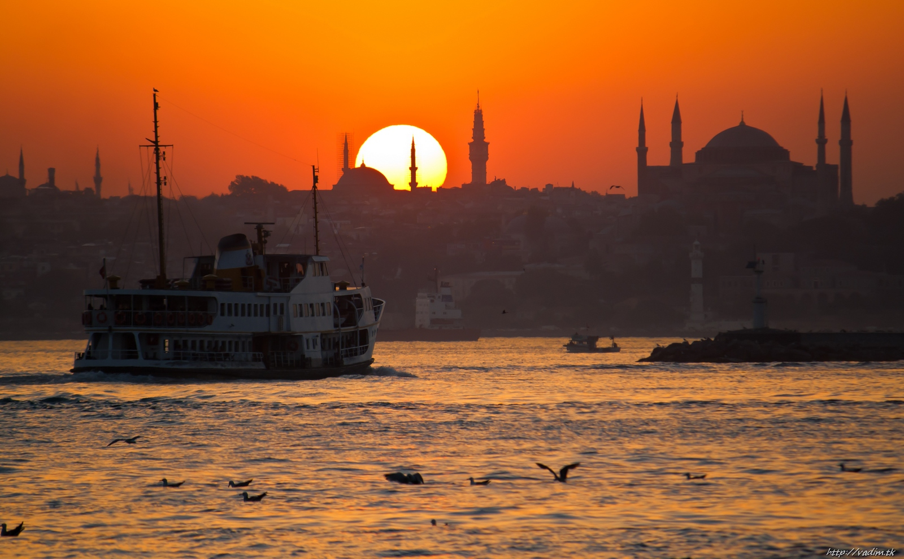

Gallery
Six images showcasing Istanbul’s culture, streets, and scenery.






Image Credits
- Storyhunt (n.d.) Grand Bazaar, Istanbul. Available at: https://www.storyhunt.io/en/articles/grand-bazaar-istanbul (Accessed: 17 January 2026).
- Pexels (n.d.) Scenic waterfront view of Istanbul Bosphorus. Available at: https://www.pexels.com/photo/scenic-waterfront-view-of-istanbul-bosphorus-32022804/ (Accessed: 17 January 2026).
- Pexels (n.d.) Morning view of Istanbul skyline with mosques. Available at: https://www.pexels.com/photo/morning-view-of-istanbul-skyline-with-mosques-30926454/ (Accessed: 17 January 2026).
- Gezi Günlüğüm (n.d.) Topkapı Sarayı. Medium. Available at: https://medium.com/@gezigunlugum/topkap%C4%B1-saray%C4%B1-giri%C5%9F-%C3%BCcreti-2c4d5d30079a (Accessed: 17 January 2026).
- Wikidata (n.d.) İstiklal Street. Available at: https://www.wikidata.org/wiki/Q344348 (Accessed: 17 January 2026).
- TripAdvisor (n.d.) Bosphorus night cruise by private boat. Available at: https://www.tripadvisor.com/AttractionProductReview-g293974-d17244285-Bosphorus_Night_Cruise_by_a_Private_boat_Balik_Ekmek_Fish_Chips-Istanbul.html (Accessed: 17 January 2026).